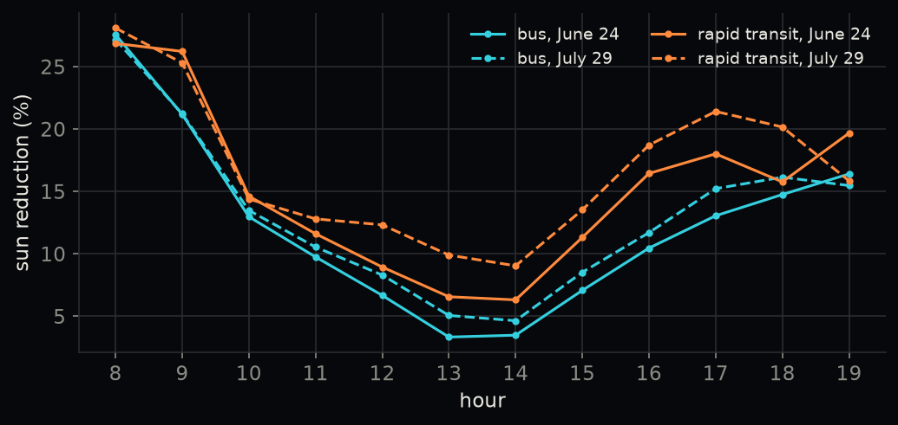
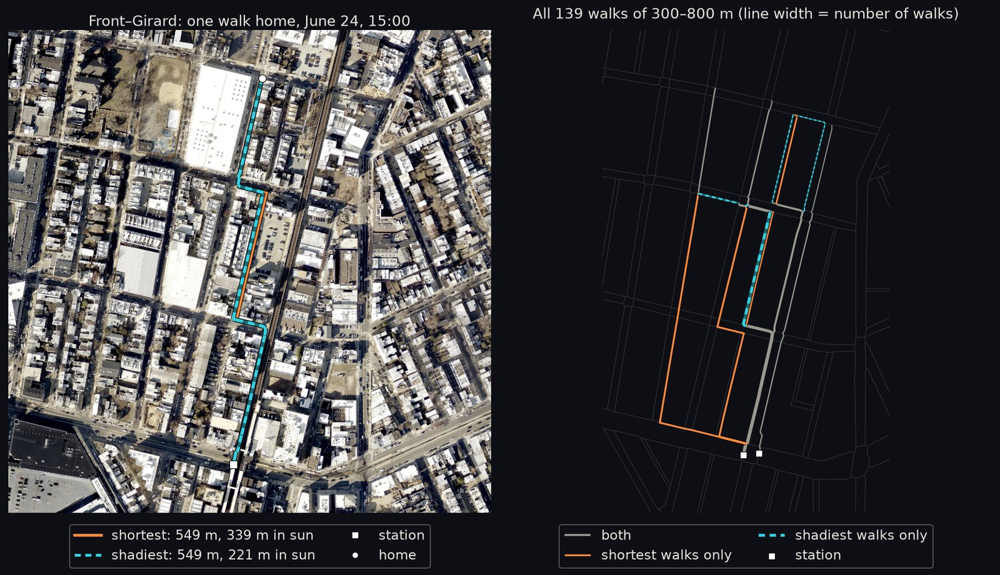
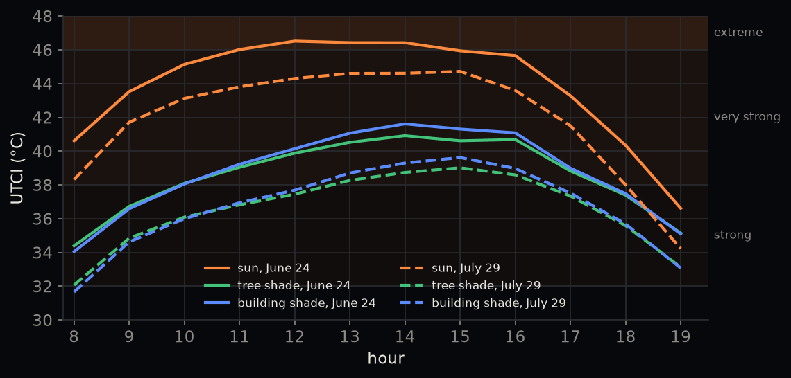
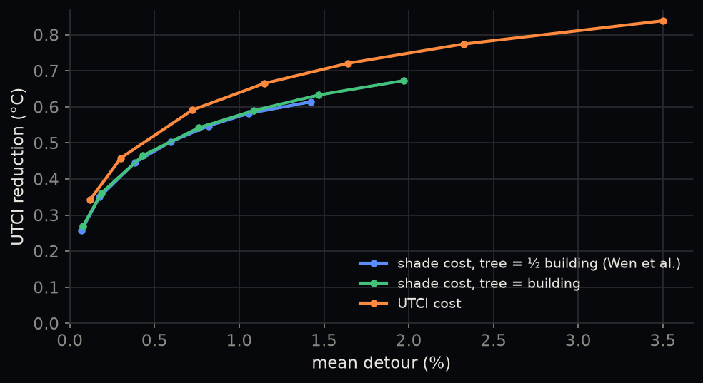
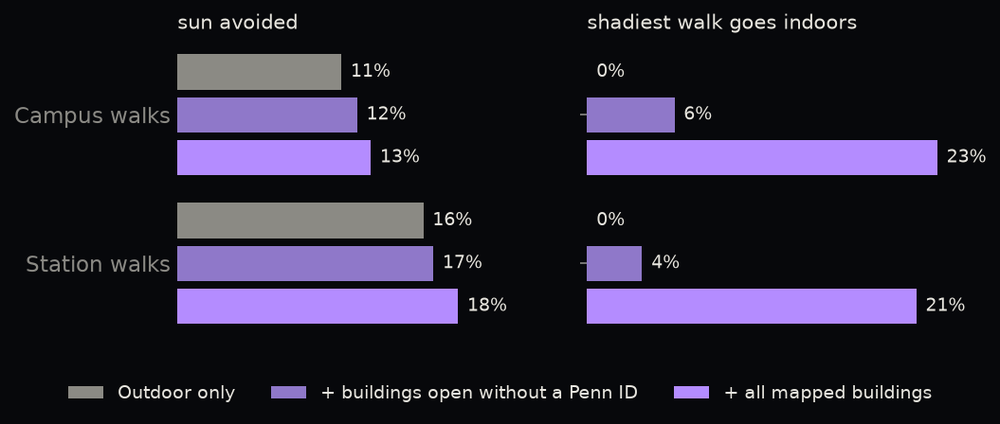

Results
How much sun and heat a walk home can avoid, where, and what buildings add.
Numbers are for 15:00 (June 24 and July 29, 2025, pooled) unless stated. The shadiest walk minimises the shade cost, the coolest walk the heat (UTCI) cost; see Methods.
How much sun can a walk home avoid?
Walks of 300–800 m from rapid-transit stations, 15:00
70%
of the shortest walk is sunny
−12%
sun on the shadiest walk
+0.48%
extra distance
55%
of walks have no cooler option
| Mode | Walk | Walks | Sun on shortest | Sun ↓ | Detour (mean / 95th pct.) | Exposure ↓ | No cooler option |
|---|---|---|---|---|---|---|---|
| Bus | <300 m | 185,230 | 78% | 3.2% | 0.1% / 0.7% | 0.37% | 88% |
| Bus | 300–800 m | 135,386 | 77% | 7.8% | 0.4% / 2.4% | 0.84% | 63% |
| Bus | 800–1200 m | 33,147 | 78% | 7.2% | 0.4% / 2.0% | 1.01% | 54% |
| Rapid | <300 m | 17,074 | 66% | 4.3% | 0.2% / 1.2% | 0.54% | 85% |
| Rapid | 300–800 m | 45,393 | 70% | 12.4% | 0.5% / 2.6% | 1.55% | 55% |
| Rapid | 800–1200 m | 14,884 | 71% | 14.1% | 0.4% / 2.1% | 2.35% | 48% |
Sun ↓ = sun avoided by the shadiest walk; Exposure ↓ = weighted exposure reduction.
Shade costs almost no distance. Mean detours are below 1%; 95% of shadiest walks are at most 0.7%–2.6% longer.
Rapid-transit walks gain more: stations sit in denser, taller areas where a parallel street in building shade is usually close.
Short walks have no choice. Under 300 m, more than four in five have no cooler option.
Long morning and evening shadows offer the most; around 13:00–14:00 little shade is left.
Where can walkers find shade?
Walks home from frequent bus stops (300–800 m), summarised on a 500 m grid of homes and grouped into three types by how sunny they are and how much sun can be avoided. The types summarise a gradient, not sharp classes.
| Cluster | Cells | Sun on shortest | Sun reduction | No cooler option | Building height (m) | Canopy | Sidewalk km/km² |
|---|---|---|---|---|---|---|---|
| Sunny, no cooler option | 322 | 80% | 1.6% | 86% | 7.6 | 9% | 31 |
| Sunny but avoidable | 51 | 65% | 25.3% | 23% | 9.1 | 7% | 44 |
| Some cooler options | 137 | 74% | 9.1% | 47% | 7.9 | 9% | 34 |
Across cells, sidewalk density is the strongest correlate of being able to avoid the sun (Spearman ρ = 0.42 with sun reduction), while building height mostly sets how sunny the walk is to begin with (ρ = −0.47 with sun share). Leafy areas start cooler but, with sparser streets, rarely offer an alternative. Explore the cells on the city map.
Rapid-transit stations
The six largest and four smallest sun reductions for walks of 300–800 m, among the 65 stations with at least 50 such walks (6 smaller ones are hollow circles on the city map).
| Station | Line | Walks | Sun on shortest | Sun ↓ | No cooler option |
|---|---|---|---|---|---|
| Broad–Spring Garden | B (Broad Street) | 297 | 66% | 56.0% | 0% |
| Front–Girard | L (Market-Frankford) | 139 | 68% | 38.7% | 20% |
| Huntingdon | L (Market-Frankford) | 1,658 | 72% | 37.8% | 20% |
| Wyndmoor | Regional Rail | 51 | 65% | 27.0% | 22% |
| Lombard–South | B (Broad Street) | 2,021 | 55% | 26.9% | 19% |
| Snyder | B (Broad Street) | 2,697 | 70% | 22.6% | 36% |
| Ryers | Regional Rail | 199 | 85% | 0.0% | 100% |
| Torresdale | Regional Rail | 135 | 93% | 0.0% | 100% |
| Sedgwick | Regional Rail | 195 | 75% | 0.0% | 100% |
| NRG Station | B (Broad Street) | 125 | 68% | −0.1% | 100% |
At Front–Girard and Huntingdon (L) the shadiest walk follows the elevated L on the side its shadow falls; at Broad–Spring Garden (B) it simply crosses to the shaded side of the street; at Wyndmoor (Regional Rail) it follows tree-lined streets.

From sun to heat
The UTCI is how hot the weather feels, in °C. On June 24 at 15:00 a typical sunlit sidewalk felt like 45.9 °C, at the edge of extreme heat stress (46 °C); a step into shade took off about 5 °C.
Median UTCI of sidewalk points, June 24, 15:00
45.9 °C
in the sun
41.3 °C
in building shade
40.6 °C
in tree shade
−5.3 °C
tree shade against sun

- Tree shade is as cool as building shade. The shade cost counts it as half as good; in the heat model it takes off 112%–115% of the step from sun to building shade at 15:00 (94% at 8:00). Shaded streets still receive heat from walls and pavement that stood in the sun; a tree also shades the ground under it.
- Shade does not make a walk comfortable. Building shade stays at very strong heat stress from 10:00 to 17:00 on June 24.
The coolest walk home
The coolest walk, for walks of 300–800 m from frequent bus stops at 15:00:
−0.54 °C
mean UTCI on the coolest walk (shadiest −0.40)
+0.70%
extra distance (shadiest +0.37%)
−28%
metres of extreme heat (shadiest −16%)
77%
same path as the shadiest walk
| Mode | Walk | UTCI, shortest | Extreme heat, shortest | Shadiest: UTCI / detour | Coolest: UTCI / detour | Extreme heat ↓ shadiest / coolest | Coolest = shadiest |
|---|---|---|---|---|---|---|---|
| Bus | <300 m | 44.2 °C | 33 m | −0.18 °C / +0.14% | −0.25 °C / +0.31% | 6% / 12% | 93% |
| Bus | 300–800 m | 44.1 °C | 100 m | −0.40 °C / +0.37% | −0.54 °C / +0.70% | 16% / 28% | 77% |
| Bus | 800–1200 m | 44.1 °C | 195 m | −0.40 °C / +0.42% | −0.59 °C / +0.92% | 16% / 36% | 60% |
| Rapid | <300 m | 43.6 °C | 38 m | −0.22 °C / +0.20% | −0.29 °C / +0.38% | 9% / 13% | 92% |
| Rapid | 300–800 m | 43.8 °C | 104 m | −0.58 °C / +0.48% | −0.72 °C / +0.79% | 22% / 32% | 71% |
| Rapid | 800–1200 m | 43.8 °C | 187 m | −0.65 °C / +0.45% | −0.79 °C / +0.87% | 22% / 32% | 55% |
UTCI = mean along the walk, change against the shortest. Extreme heat = metres with UTCI ≥ 46 °C, and the reduction for walks that have any.
- The two walks mostly agree: for 71%–77% of walks of 300–800 m they are the same. Where they differ, the coolest walk takes the tree-lined street.
- A little cooler for a little more distance: about 0.1 °C cooler than the shadiest walk and 1.4–2.2 times the cut in extreme heat, for detours of 0.3%–0.9%.
- Rapid-transit walks gain most: −0.72 °C against −0.54 °C from bus stops.
- Averages hide the walks with no choice. The gain is largest in the morning (−0.82 °C at 09:00), small around midday (−0.33 °C at 14:00) and again in the evening (−0.13 °C at 19:00), when the low sun no longer heats the sunny side much.
Why the coolest walk is cooler

At the same detour the UTCI cost cools walks 12%–14% more than the shade cost. Counting tree shade as building shade adds only about 1%: most of the gain comes from differences within each shade class, such as sun next to hot walls against sun on a lawn.
Robustness. With 5% or 15% of the sun passing through tree crowns instead of 3%, tree shade’s share of the building-shade relief at 15:00 moves from 112% to 110% and 99%, still far from the half assumed by the shade cost. See the technical notes.
Through buildings (University City)
| Sample | Scenario | Walks | Shadiest uses indoors | Sun ↓* | Exposure ↓* | Length* |
|---|---|---|---|---|---|---|
| Campus | Outdoor only | 3,000 | 0% | 10.6% | 1.3% | +0.71% |
| Campus | + buildings open without a Penn ID | 3,000 | 6% | 11.6% | 1.8% | +0.46% |
| Campus | + all mapped buildings | 3,000 | 23% | 12.5% | 2.3% | +0.52% |
| Station | Outdoor only | 5,204 | 0% | 15.9% | 1.7% | +1.00% |
| Station | + buildings open without a Penn ID | 5,204 | 4% | 16.6% | 2.0% | +0.89% |
| Station | + all mapped buildings | 5,204 | 21% | 18.2% | 2.7% | +0.73% |
Campus = building to building; Station = station to building. * against the shortest outdoor walk. Shade cost only (indoor passages have no UTCI).
Opening the mapped buildings puts about one in five shadiest walks indoors and removes another 1.9–2.3 points of sun, without longer walks. The Indoor Contribution Index stays near zero: passages here are an equally long, cooler option, not a shortcut, unlike the malls and linked towers of Wen et al.’s Dubai stations. Indoor routes are taken mainly when they are on the way; walks of 800–1,200 m use them 2.4–3.0 times as often as walks of 300–800 m.

Limitations
- Campus and park paths are missing outside University City, so cooler options there are understated.
- “No cooler option” mixes two cases: no cooler street, or one not worth the detour.
- Two hot, sunny days in 2025; trees from leaf-off LiDAR and 2018 land cover; buildings from 2022.
- One weather cell: no neighbourhood differences in air temperature or wind.
- Trees let a fixed 3% of the sun through.
- Indoor passages assume open, air-conditioned buildings; they have no UTCI.